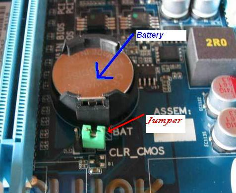
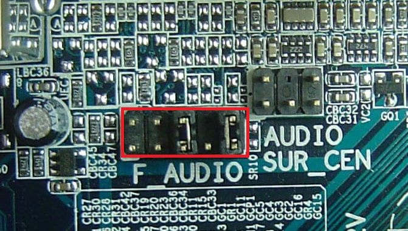
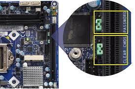
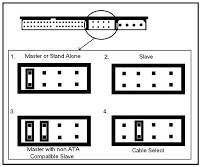

Siswa mampu mengidentifikasi jumper sebagai alat perakitan komputer.
Jumper pada komputer adalah penghubung (konektor) sirkuit elektronik. Fungsinya untuk menghubungkan
atau memutus suatu sirkuit/aliran listrik. Bentuk jumper sangat kecil, seperti pada
Gambar 1 berikut.
1. Jumper CMOS
CMOS (Complementary Metal Oxide Semiconductor) yaitu chip semikonduktor yang menyimpan data tanpa
membutuhkan sumber daya eksternal. CMOS menangani petunjuk dasar untuk inisialisasi komponen hardware
ketika boot. Pengaturan ini dikenal dengan BIOS (Basic Input Output System). Jumper ini terletak dekat
baterai CMOS. Lihat
Gambar 2 berikut.
Biasanya dekat baterai CMOS terdapat 3 pin. Fungsi jumper pada pin :
Jika pin 1-2 dihubungkan, maka CMOS akan menyimpan setiap settingan yang disimpan melalui BIOS.
Menghubungkan pin 2-3 bertujuan untuk mereset settingan CMOS ke posisi default. Biasanya
dilakukan ketika komputer tidak mau hidup.
2. Jumper Audio
Jumper audio adalah jumper untuk mengaktifkan suara jika tidak ada kabel front audio. Kita tinggal
menghubungkan pin 5-6 dan 9-10. Lihat
Gambar 3 berikut.
3. Jumper USB Power
Jumper ini digunakan untuk mengaktifkan fungsi USB. Terdapat 3 pin untuk setting jumper ini.
Lihat
Gambar 4 berikut.
Cara menggunakan jumper ini:
Jika tidak ada jumper pada semua pin, maka USB tidak berfungsi.
Jika jumper dipasang pada pin 1-2, maka USB berfungsi.
Jika jumper dipasang pada pin 2-3, maka USB hanya berfungsi di Windows (tidak berfungsi
di DOS).
4. Jumper RAM
Biasanya terdapat pin di sekitar slot RAM pada Motherboard yang memiliki 2 jenis slot memory. Maka
untuk memilih salah satu slot diperlukan jumper ini. Mari lihat
Gambar 5 berikut.
5. Jumper Harddisk ATA dan ODD ATA
Berguna untuk menentukan status Master (utama) atau Slave (sekunder) saat melakukan penggabungan
Harddisk dengan Harddisk atau Harddisk dengan ODD pada satu kabel ATA.
Gambar 6 berikut.
Jika status sama-sama Master, maka keduanya tidak akan terdeteksi oleh Motherboard. Pada Motherboard
tertentu, status Slave pada harddisk tunggal juga tidak akan terdeteksi.
Gambar 1. Jumper

Gambar 2. Jumper CMOS

Gambar 3. Jumper Audio
Gambar 4. Jumper USB

Gambar 5. Jumper RAM

Gambar 6. Jumper ATA
Pertanyaan:
Jumper-jumper yang baru saja kita pelajari diantaranya ....
Jumper Audio Jumper CPU Jumper USB